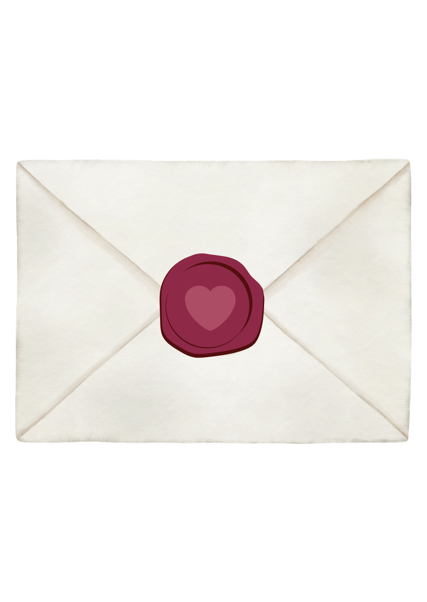
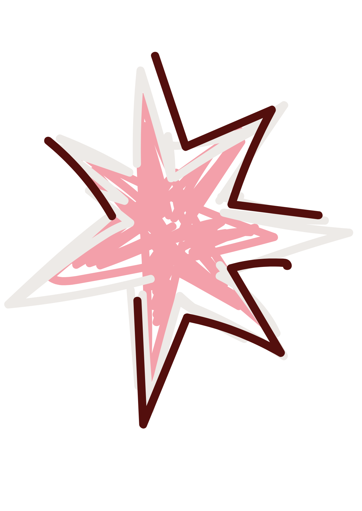
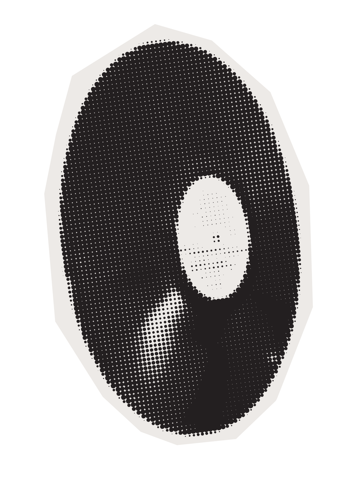

Hacé click para abrir el sobre
Buenas! La idea es hacer una chupijuntada en mi casa, donde cada uno trae lo que toma, ponemos musica y pasamos el rato!
Va a haber torta y papitas pero vengan comidos!!
De 22 hs en adelante.
Mi cumple es el 10 de noviembre pero por los paciales siempre puede ser celebrado antes ♥

